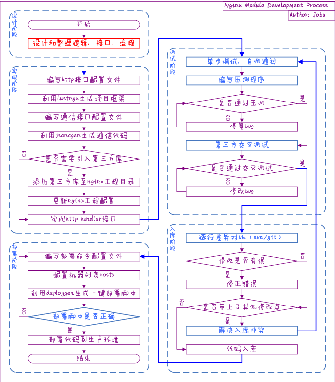

Nginx Module Development Process
工序流程图

工序流程要点说明
- 红色标注的工序通常经验越丰富，越关注这块，反之越不关注
- 蓝色标注的是最容易忽略，但最容易出事故的流程
- http 接口配置文件可参考 ngx_wizard 的相关说明
- 通信接口配置文件可参考 jsoncgen 的相关说明
- nginx 工程配置的更新可参考 附录
- 测试阶段的 单测、压测和交叉测试 是保证程序可用的关键， 任何一步都不可省略 。
- 单测主要保证程序 基本功能可用 ，可用单步调试的方法 走完程序的每一个逻辑分支 。
- 压测主要用于保证程序在重复处理大量请求的情况下， 不出现任何资源泄露的问题 。压测的脚本通常由开发模块的人员自行完成。
- 交叉测试的执行人员通常由 第三方 的开发或者测试担任（不能由开发模块的人员执行），用于保证程序的容错性和高可用性。
- 代码入库的流程通常是开发者极其容易忽略的一个环节。
- 如果工程只有一个开发者独立完成，则该流程可忽略。
- 一旦涉及到 多个开发者 并行工作，该流程务必要严格执行，否则非常容易出现 将不该入库的代码入库 的情况，这将导致在测试出现问题的时候 无法高效定位 。
- 部署命令配置文件可参考 deploygen 的相关说明
- 部署脚本的检查是上线前的最后一道工序。该工序 绝对不能省略 ，否则一旦部署出现问题，会 直接影响线上业务的稳定运行 ，损失难以估量。检查要点包括：
- 部署命令是否正确，可以在测试机器中进行部署，看结果是否正确。
- 部署的主机列表是否正确，可通过文本比对工具进行比较。